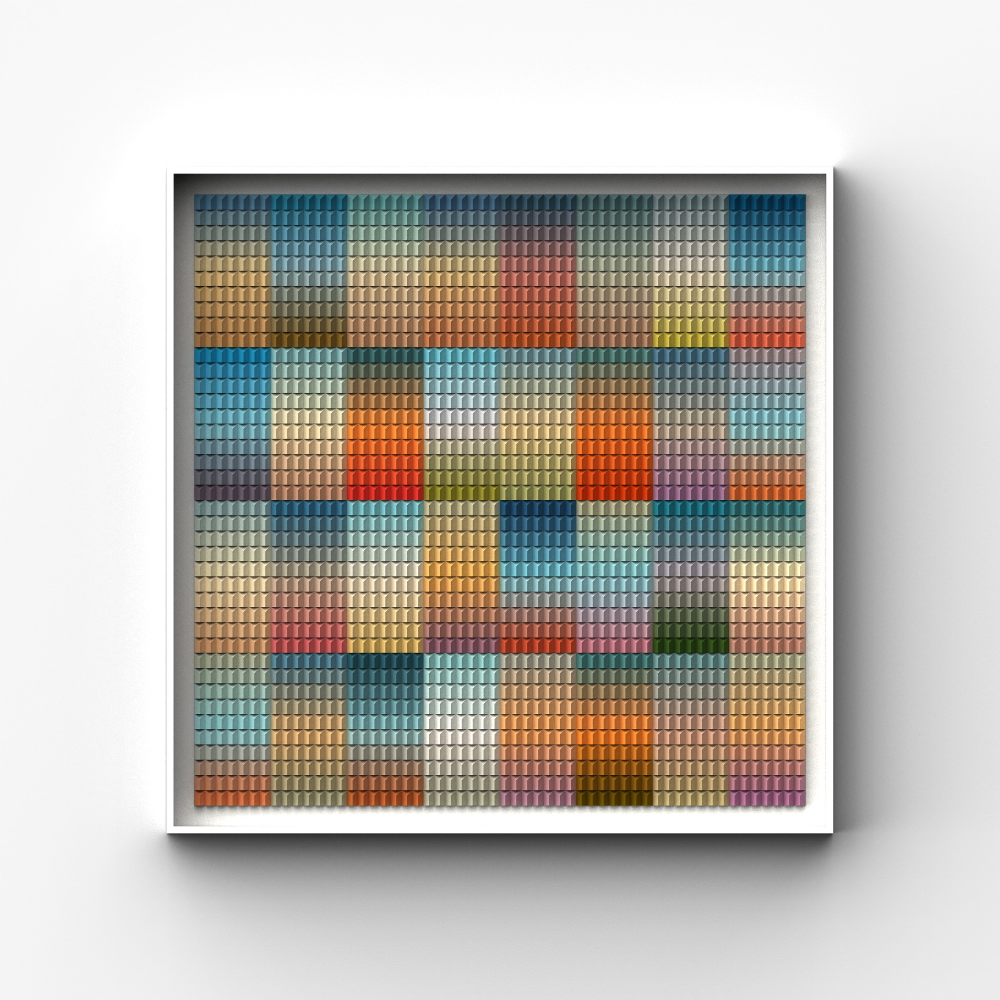

Paper relief
Collected Views
Size to confirm
Explore the views to see the work from different perspectives. Room settings, where shown, are visualizations.
Inquire about this work ↗
Paper relief
Size to confirm
Explore the views to see the work from different perspectives. Room settings, where shown, are visualizations.
Inquire about this work ↗